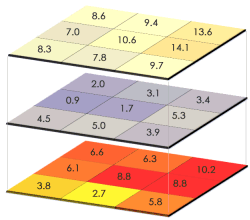
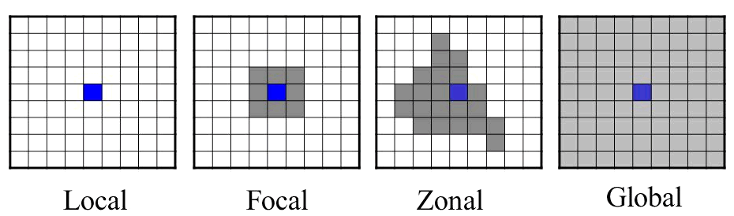

Raster Analyses

Common analytical opertations for rasters include:
| Task | Function(s) |
|---|---|
| descriptive cell statistics | cellStats() |
| binary mask | myraster[] |
| raster algebra (local operations) | * + - / |
| focal (neighborhood) operations | focal() |
| zonal stats | zonal() |
| distance surface | distance() |
| spatial join (enrichment) | extract() |
| spatial interpolation | |
| classify pixels | |
| time series analysis |
Mathematical operations on raster cells are generally divided into local, focal, zonal, and global, in reference to their spatial scope (Tomlin 1990).

To view descriptive statistics about cell values for an entire layer(s), we can use the summary() function or cellStats().
cellStats(x, stat=‘mean’, …)
x should be a raster and stat the name of a function.
Zonal stats compute statistics for discrete areas within a raster. To compute zonal statsistics use the zonal() function:
zonal(x, z, fun=‘mean’, …)
x should be a raster, and z should a categorical raster where the cell values are integers representing different zones. Both rasters should have the same extent, rows, columns, and CRS.
Let’s find the average elevation per neighborhood in San Francisco.
What is the average slope per SF neighborhood?
To remember how to compute the slope, see Finding the Slope, Aspect, and Hillshade
You can also get zonal statistics using the extract() function with a SpatialPolygons object.
To compute focal stats, th go-to function is:
focal(x, w, fun, …)
Where x is a raster, w is a matrix of weights (the moving window), and fun is a function.
Examples: See Image Processing with Kernels
The distance() function will generate a new raster whose cell values represent the distance to the nearest feature.
This function returns different types of distance surfaces depending on what type of objects x and y are. Read the help page for details.
To compute the distance to the nearest library, we need to rasterize the libraries using whichever raster we prefer as the ‘template’. Since we don’t care which library is closest, all cells that have a library will get value 1, and everything else will be NA.
Begin by importing a CSV file with the library locations. For details how we got the coordinates for each library, see Geocoding.
csv_fn <- "../docs/data/sf_libraries_latlon.csv"
file.exists(csv_fn)
sflib_loc_df <- read.csv(csv_fn, stringsAsFactors = FALSE)
head(sflib_loc_df)Next we convert this to a SpatialPoints object, and project to UTM Zone 10.
sflib_ll <- sp::SpatialPoints(coords=sflib_loc_df[, c("lon","lat")], proj4string = CRS("+init=epsg:4326"))
utm10n <- sp::CRS("+proj=utm +zone=10 +ellps=WGS84")
sflib_utm <- sp::spTransform(sflib_ll, utm10n)
plot(sflib_utm, axes=TRUE)Time to rasterize. We pass field=1 so cells with a feature in them will be assigned the value 1.
Finally we’re ready to create the distance surface.
sf_dist2lib_rst <- distance(sflib_rst)
plot(sf_dist2lib_rst)
plot(sflib_utm, add=TRUE, col="red", pch=16, cex=1)Compute the distance to the nearest library in San Francisco.
Bonus: compute the average distance to library for each neighborhood. Which neighborhood has the best library coverage as measured by distance?
Binary masks are rasters where the cell values are either 1 or 0 (or NA). A value of 1 generally means the cell satisfies some condition, for example suitable habitat or an object of interest was seen there. 0 or NA means the condition was not met. Binary masks are useful in analysis because they reduce a lot of data down to just two categories, and they’re easy to combine through raster algebra (below).
Binary masks can be generated with the same techniques used to rescale and reclassify rasters. A standard technique consists of three steps:
Write an expression that returns TRUE or FALSE if cell values meet the condition.
Create a new ‘blank’ raster for the mask, using an existing raster with the data as the template.
Use the expression as a filter for the mask raster, and assign a value of 1 to all cells that meet the condition.
In this example, we’ll find all the areas in San Fransisco where the slope is greater than 20 degrees. These areas might be more susceptible to landslides, for example.
Step 1: Compute the Slope Surface
Step 2: Write an expression that identifies cells whose slope is greater than 20 degrees
Here we need to remember that slope units are radians, so we have to divide 20 degrees by 180 to get the minimum slope value in radians.
Step 3: Next, we’ll use this raster as the ‘template’ for a new mask.
Currently, our mask has no values, however it has the same extent, # rows and columns, and CRS as the slope raster.
Step 4: Use the expression as a filter and assign those cells the value of 1
Finally, we use that expression as a filter for the mask raster, putting it inside square brackets, and give those cell a value of 1. Even though the expression checks cell values from the slope raster, it works as a filter on the mask because the mask raster has the exact same number of rows, columns, extent, and CRS.
Raster algebra (aka raster calculator, map algebra) is where you add, subtract, multiply, etc. two or more rasters together, as though they were numbers. The operation is evaluated pixel-by-pixel. Other things to remember when performing raster algebra:
Raster algebra is used in many, many analyses. It’s particularly useful with binary masks, as it gives you many options to combine separate criteria (e.g., binary or ranked, apply weights, etc).
Syntax: rast1 + rast2 - rast3 * rast4 / rast5
See the list of raster algebra functions sect 4 of the vignette
Notes
In this example, we multiplied the two masks together because the rules specified that both conditions were required. An alternative approach could be to add raster masks together so that the pixel values in the output reflect a ranking based on the number of criteria satisfied.
For large datasets and/or more complex combinations, the overlay() function may have better performance.
yosem_slope <- raster("~/yosemite_slope.tif")
all_slope_vals <- getValues(yosem_slope)
## Slope is computed in radians. To show degrees, multiply by 180.
hist(all_slope_vals * 180, xlab="slope (degrees)", col="grey80", main="Yosemite Slope Distribution")Let’s make a mask of high slope values, where we define steep slopes as > 40 degrees.
## Create a blank copy of yosem_slope
yosem_slope_steep <- raster(yosem_slope)
hasValues(yosem_slope_steep)
threshhold_deg <- 40
yosem_slope_steep[yosem_slope > (threshhold_deg / 180)] <- 1
yosem_slope_steep
summary(yosem_slope_steep)
plot(yosem_slope)
plot(yosem_slope_steep, col="red", add=TRUE, legend=FALSE)Raster mini exercise: construct an elevation profile along a bearing through the center of the park
Try It: change the bearing
Challenge: construct a profile for a trail - give them example code or a forum link on
Create some sample points
bbox <- yosem_bnd_prj@bbox
num_pts <- 20
x <- runif(min=bbox[1,1], max=bbox[1,2], num_pts)
y <- runif(min=bbox[2,1], max=bbox[2,2], num_pts)
yosem_pts <- SpatialPoints(coords=data.frame(x=x,y=y), proj4string = yosem_bnd_prj@proj4string)
plot(yosem_bnd_prj, axes=T, asp=1)
plot(yosem_pts, cex=2, pch=16, col="red", add=TRUE)To extract values from a raster for where features overlap, use extract().
Raster data manipulation, book chapter by Robert Hijmans
Working With Raster Time Series Data in R, NEON Science